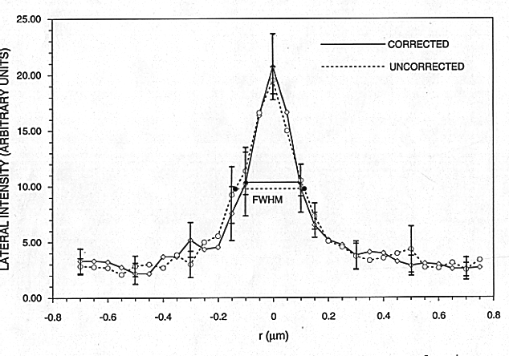

Fig. 4. Averaged lateral intensity of ensembles of thirteen 140-nm beads at best focus, 40 micro-meters depth, with (solid curves) and without (dashed curves) the binary corrector. Samples are spaced at 50nm. Error bars represent 95% confidence intervals; there is no significant difference between the profiles.